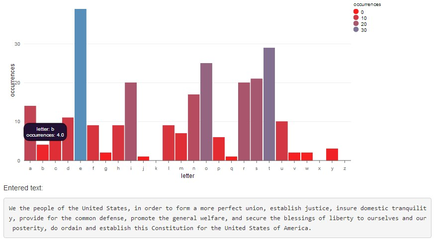

Did you ever really want to know how many b's were in the preamble to the constitution? Or which letter occurs most frequently in Mississippi? Well maybe not, but it's rather common to eventually want to know the character frequency of some text, and if it's longer than the word Mississippi, letting a computer do it is likely what you want.
